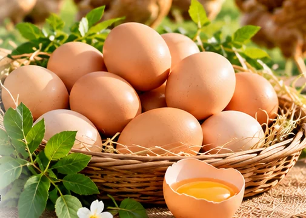
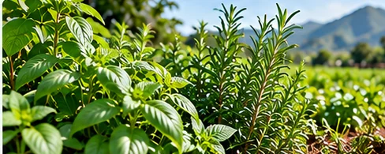
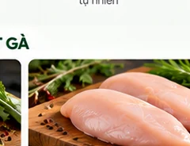
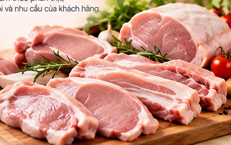
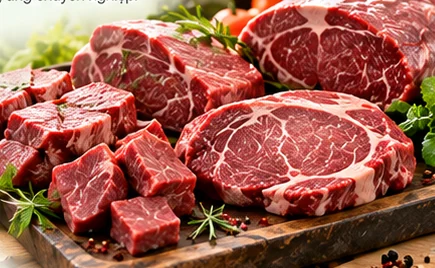
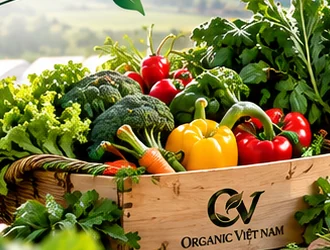
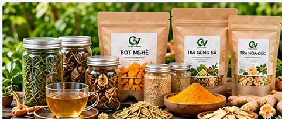

Hình minh họaSản phẩm
Danh mục sản phẩm
Organic Việt Nam định vị sản phẩm thảo dược, ưu tiên nghiên cứu nguyên liệu và quy trình ứng dụng phù hợp. Các nhóm thịt, trứng, gia cầm và nông sản khác được giới thiệu trung tính, chưa xác nhận ứng dụng thảo dược. Đây chưa phải gian hàng nhận đặt mua.

Khám phá sản phẩm
Chọn nhóm sản phẩm hoặc nhập từ khóa để lọc danh mục.
Hiển thị toàn bộ danh mục

Hình minh họa
Hình minh họa
Hình minh họa
Hình minh họa
Hình minh họaKhông tìm thấy sản phẩm phù hợp
Hãy thử từ khóa khác hoặc chọn tất cả danh mục.
Hình ảnh minh họa trung tính, đang chờ ảnh sản phẩm thực tế. Thành phần, nguồn nguyên liệu, quy trình ứng dụng thảo dược và trạng thái thương mại của từng sản phẩm cần hồ sơ xác minh trước khi công bố.